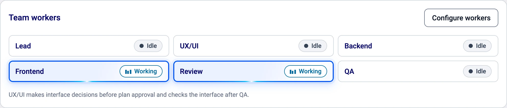
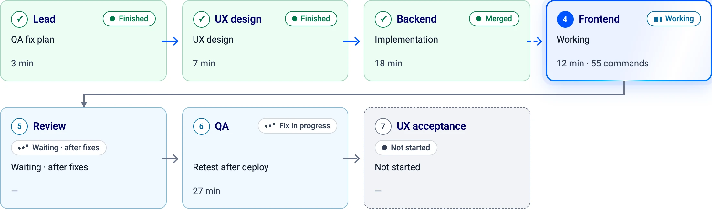
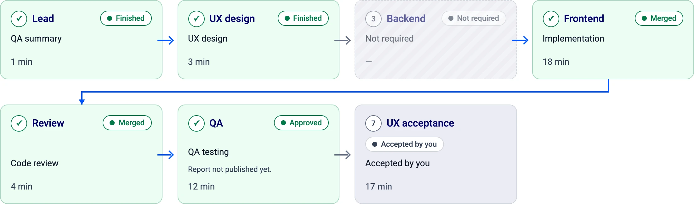
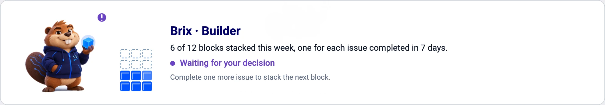
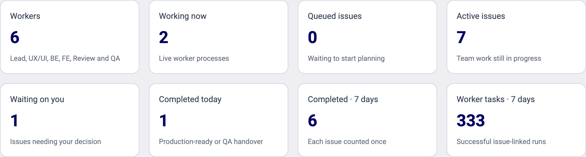
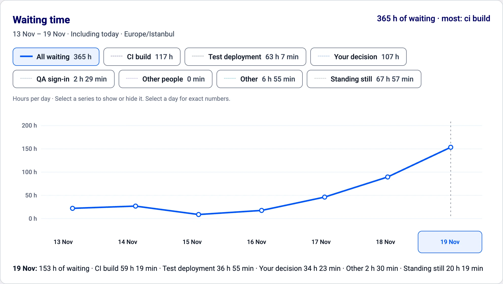
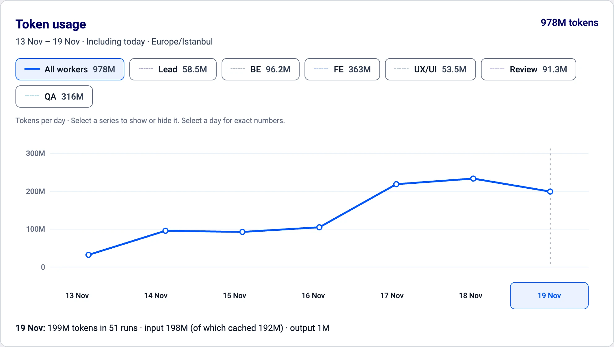
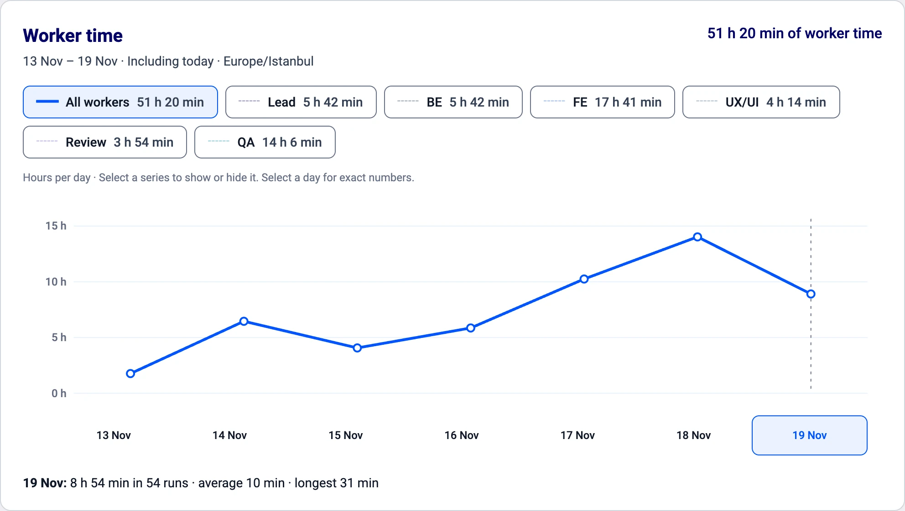
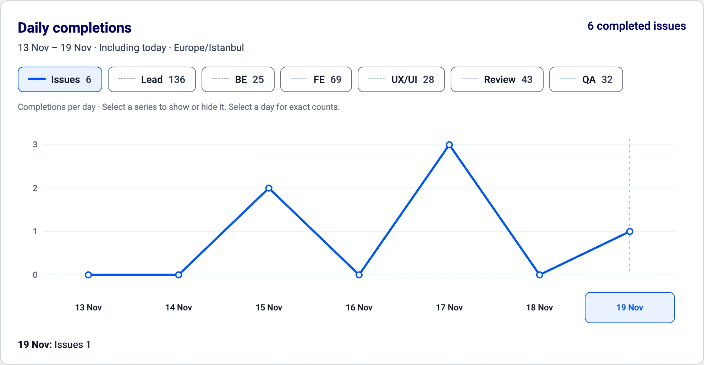

Case Study 03 · Agentic Engineering
Building an AI agent team that ships issues end to end.
How I designed a six-role team of AI workers that plans, designs, implements, reviews, and tests real product issues, and what a week of its own analytics showed about where delivery time goes.

- Role
- CTO; designed and built the system
- Context
- Product engineering at Proteams
- Focus
- Multi-agent delivery, guardrails, and observability
- Evidence
- Live dashboard captures, 13–19 November 2026
Context
An agent can write a change. Delivery is everything around it.
Getting a model to produce a plausible diff is no longer the hard part. A change only counts once it has been planned against the real requirement, reviewed by someone who did not write it, merged at the commit that was reviewed, deployed to a test environment, and checked in a browser by someone acting as the user. That chain is where an engineering team spends most of its discipline, and it is the part a single agent in a terminal does not cover.
The agent team is my answer to that for our own product work. One person, the owner, adds an issue link to a queue. Six AI workers take the issue from a plan to a production-ready handover. The owner is asked only for the decisions that are really theirs: product trade-offs, accepted risks, and access the team cannot get on its own.

Team model
Six workers, each with a narrow job and narrower permissions.
The team splits responsibility the way a careful human team does. The role names matter less than what each role is not allowed to do.
Plans, and never writes code.
Owns the plan, the contract between backend and frontend, the merge order, and the test duties. Every decision is recorded with its reason.
Settles the interface before code exists.
Writes an implementation-ready specification before the plan is approved, then checks the finished interface after QA.
Implements in one repository.
One branch and one merge request per change. It publishes its work and stops; it never starts a build and never merges.
Builds against the agreed contract.
Works under the same rules as the backend worker and treats the other repository as read-only reference.
Is never the author.
Gets a read-only checkout of the exact commit and writes only structured findings. It cannot change the code it reviews.
Tests like a user.
Works in prepared, signed-in test browser sessions and never sees a credential. A missing sign-in is recorded as incomplete, never as a pass.


Workers do not write to the issue tracker or the code host themselves. They return results in a fixed format, and a controller checks and publishes them. The parts that only decide, such as routing work or stating that a merge is intended, run without network access. The part that acts is ordinary, tested code.
Workflow
Seven stages from an issue link to production-ready.
Every issue follows the same path, and the dashboard shows that path as a row of stage cards. A stage that does not apply, such as backend work on an interface-only change, is marked not required instead of being skipped silently.
- LeadDrafts the plan. The owner approves it, and the approved plan is locked for every later step.
- UX designSized to the change, with upper bounds. Not needed for backend-only work.
- BackendImplements and publishes a merge request.
- FrontendImplements against the backend contract in the order the plan sets.
- ReviewAn independent review after the build passes. Findings go back to the author, and a changed commit gets a fresh review.
- QAAcceptance testing in a browser once the merged change is confirmed on the test environment. A failed retest reopens the finding.
- UX acceptanceThe finished interface is checked against the approved design.




Between the stages sit gates that cannot be talked past. The build must pass on the exact commit that will merge. The merge is pinned to the reviewed commit, so if the branch has moved, the merge is refused. A green build is never treated as QA, and QA starts only after the deployment of that commit has been confirmed.
Engineering principles
The model is the smallest part of the system.
Most of the engineering went into the controller around the workers. These are the rules that made the team safe to leave running.
Saved words are not facts.
A status line a worker wrote earlier cannot prove that anything is still running. Liveness comes from the process, state comes from a fresh read, and every write is read back.
One function picks the next step.
The controller reads the saved evidence and the current facts, then decides. Steps go to an append-only journal, so a crashed run resumes at the first unmet step instead of starting over.
A wait is not a failure.
A busy build queue, another writer on the same merge request, or a slow API are normal states. The team looks again by itself and involves the owner only after a set time.
Everything is bounded.
Review rounds, QA rounds, repairs, and retries all have ceilings. Token use per issue is capped at twice the rolling weekly average; past that, the team stops and asks.
No ambient authority.
Each worker starts in a fresh, sandboxed session with only the folders and hosts its role needs. Issue text and web content are treated as data, never as instructions.
Plain words for the human.
Owner-facing text carries no identifiers, hashes, or file paths. A pause between two workers reads “Preparing the next step”, so silence is never mistaken for a stop.
The technology is deliberately plain: a Python runner and controller built on the standard library, files on disk as the record, a local dashboard, and more test code than product code.
Human in the loop
The owner is a decision-maker, not a debugger.
The team never asks an open question. When it needs a person, it offers two or three options with their consequences: approve or reject a plan, accept a named risk, release with follow-ups or send the work back, keep an issue ready for production or hand it to an independent tester. If a worker drafts a question full of internal detail, the controller refuses it, asks for one correction, and otherwise falls back to a safe default.
Everything that needs a person sits in one “Waiting on you” list. The mascot carries the same signal. Brix has five moods, in order of urgency: troubled when a run has failed, waiting when a decision is due, building while implementation runs, thinking during planning and review, and resting when the team is idle. His rank follows the last seven days of completed issues, from Rookie through Stacker, Builder, and Architect to Master builder.


A mascot on an engineering dashboard is a small thing, but it has a job. A status page that people glance at many times a day needs one signal that can be read in a second.
Analytics
The agents were not the bottleneck.
The dashboard keeps three measures apart on purpose: the tokens the workers used, the time they actually ran, and the time issues spent waiting. Adding them together would hide the most useful finding so far.


In the week of 13 to 19 November the team completed six issues through 333 successful worker tasks. The workers ran for about 51 hours in total. The same issues spent about 365 hours waiting, roughly seven times longer. Several issues wait in parallel, so the hours add up past the clock; the ratio is the point.


The two largest queues were the build system, at 117 hours, and me, at 107 hours of waiting for a decision. Test deployments added another 63. Once agents do the typing, a faster model changes little. Faster builds, faster deployments, and faster decisions change a lot. The team now also limits how many of its changes may wait for a build at once, so it stops feeding a queue that is already full.




Two more patterns stood out. Testing costs about as much as building: QA used nearly as many tokens and hours as frontend implementation, because checking real behaviour in a browser is slow, careful work for an agent as well. And coordination is frequent but cheap: the lead handled 136 of the 333 tasks, about 40 percent, on roughly 6 percent of the tokens. On the last day of the week, about 97 percent of input tokens were served from cache, which is what makes many short, focused runs affordable.


Outcome
Delivery that runs without being watched.
The result is not a model that writes code faster. It is a delivery process that keeps moving while nobody is watching it, stops when it should, and can explain where it is at any moment.
Leadership takeaway
Manage agents as a team, not as a tool.
What made this work is what makes a human team work: clear roles, limited authority, independent review, evidence before claims, and a calm way to say “I am waiting”. The difference is that with agents all of it has to be written down as code, because nothing is understood implicitly.
The operating model matters more than the model. Narrow permissions, bounded retries, and honest status language are what make autonomous work trustworthy enough to leave running. And once it is running, the numbers point away from the agents and toward the pipeline and the people around them.
About the evidence
Where the visuals and numbers come from.
Every image on this page is a cropped capture of the team's own dashboard, taken on 19 November 2026. The figures cover the seven days from 13 to 19 November and are counted by the system from its recorded runs. Issue titles and other project details were kept out of frame.